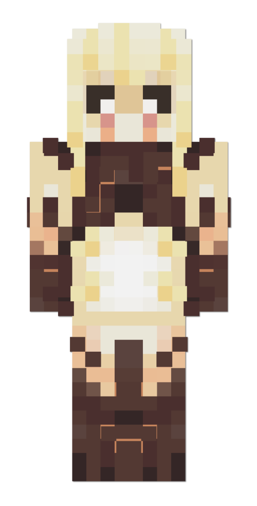
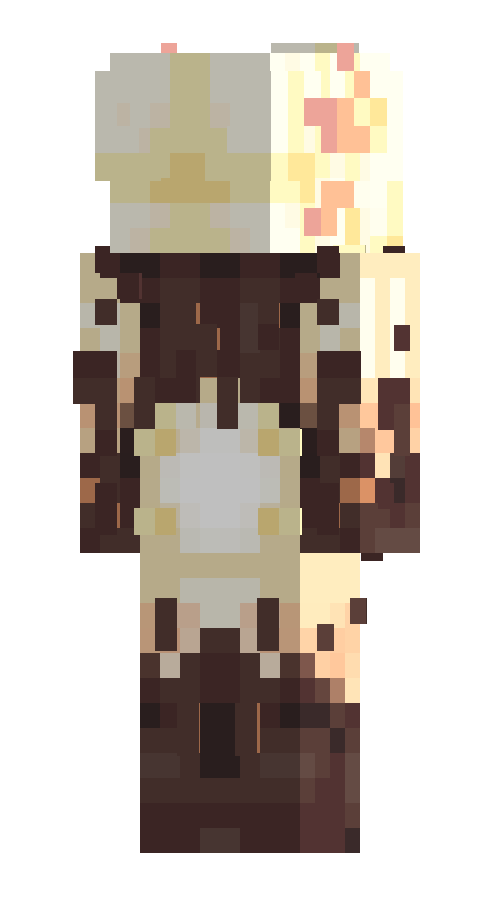

Ифритка
Ифритка — существо из Ада. Сначала она была враждебна к жителям поверхности, но со временем стала больше идти с ними на контакт.
Всю свою жизнь она провела в Аду в обществе пиглинов и совсем недавно вышла на поверхность. Её настоящее имя неизвестно, если вообще имеется. Первое время, жители Острова называли её «лавовым существом», но потом придумали ей имя Ифритка.
Внешность
Ифритка выглядит как девушка небольшого роста со светло-жёлтой кожей. Её конечности и грудная клетка покрыты тёмным наростом. У неё светлые волосы и прямая чёлка. Белки её глаз чёрного цвета, а зрачки белые. Под глазами есть длинные оранжевые подтёки. На месте ушей у неё жабры, формой напоминающие жабры аксолотлей.
Личность
Ифритка крайне асоциальна и неразговорчива. Она открыто агрессивна к жителям поверхности и может нападать на них. Первые несколько дней могло казаться, что она вовсе не обладает осознанностью и не умеет говорить, но сейчас способна на небольшие переговоры. Она диковата и не обладает навыком письма.
История
Ифритка была рождена примерно 120 лет назад в Аду. До двадцати лет она была одиноким ребёнком, скитающимся по Нижнему миру и противостоящим враждебному окружению. Её приютило племя пиглинов и обучило хоть каким-то нормам. Один из пиглинов даже научил её ковке и зельеварению. Потом это племя уничтожили люди с поверхности, Ифритка смогла спастись только потому что спряталась в лаве. С тех пор она ненавидела любых иномирцев.
На поверхности её подкармливает
Красная кошка. После Кошки,
Тето был первым, кто пытался подружиться с Ифриткой.
Галерея